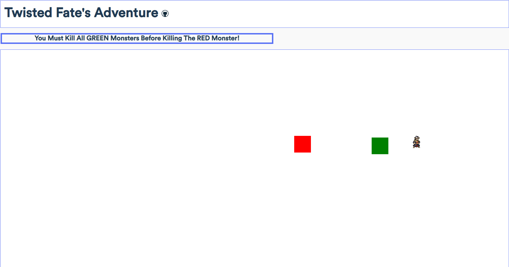

Project Showcase
Click on any project image to see more!

This project was my first try at making a browser game using HTML Canvas, and Javascript. I decided to make a game that functions similarly to a dungeon crawler in its control scheme, and brought over one of my favorite characters from League of Legends.
In this game, you play as Twisted Fate and you are able to move using an 8 directional movement system, and are also able to shoot card projectiles that deal damage on hit to monsters.
In order to win, you must kill all of the green monsters before you are able to kill the red monster, upon killing the red monster you have won.
This project was my first try at making a browser game using HTML Canvas, and Javascript. I decided to make a game that functions similarly to a dungeon crawler in its control scheme, and brought over one of my favorite characters from League of Legends. In this game, you play as Twisted Fate and you are able to move using an 8 directional movement system, and are also able to shoot card projectiles that deal damage on hit to monsters. In order to win, you must kill all of the green monsters before you are able to kill the red monster, upon killing the red monster you have won.